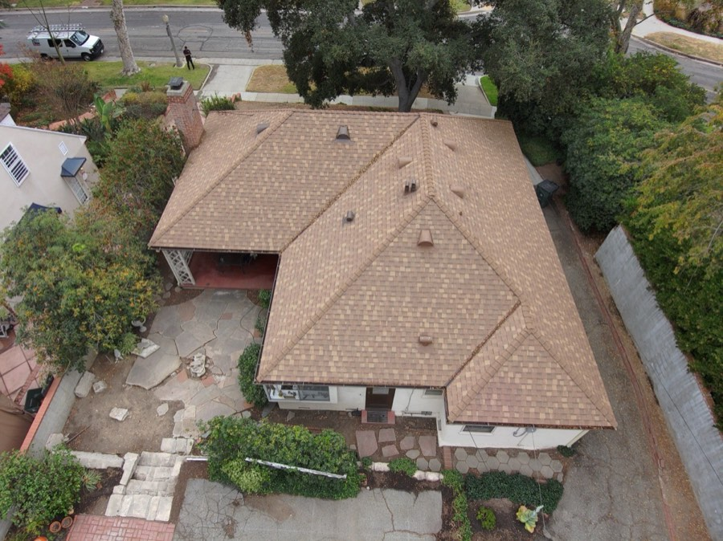

What sets us apart on a roof you'll live under for decades.
We're certified GAF Master Elite, a status held by only the top 2% of roofing contractors nationwide. It's not something you can buy. It requires proven experience, proper licensing and insurance, and a track record of quality. It also may allow eligible roof systems to qualify for enhanced manufacturer warranty options.
We photo-document our work so you can see what was done. No guessing, no taking our word for it. The report is yours to keep.
Fully licensed in California, bonded, and insured. We'll show you the paperwork before you ever sign.
We work throughout Pasadena, Altadena, Arcadia, San Marino, and the surrounding San Gabriel Valley. We're not a fly-by-night crew, we're the company you'll see around town and can hold accountable.
From the first inspection to the final cleanup and warranty packet, we keep you updated through the process. We explain the scope and known assumptions before work begins.

The goal isn't to rush you. It's to make sure you have the right information before choosing a roofer.